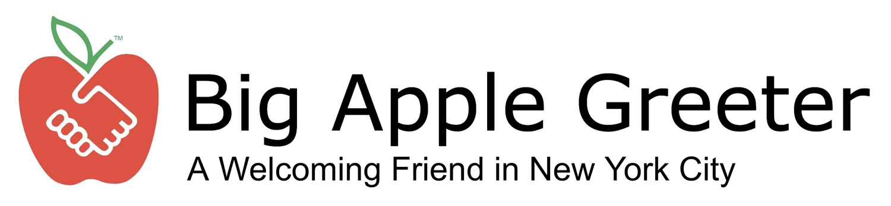

A New York City Organization with over 300 volunteers and 5000 annual visitors across 100 neighborhoods turns 35.
Capturing a New York cultural moment.
Big Apple Greeter is now mobile.
On the map.
35 years of content made to last another 35.
0:00
0:00
It’s showtime, coming September 2026.
Site is paired with a headless CMS API, allowing easy maintenance without code.
Jack Murray
Sole designer · 2026 to present
- Brand strategyPositioning & naming
- Identity designIllustrator
- 3D & modellingBlender
- Motion designAfter Effects
- Image compositingPhotoshop
- Video editingPremiere Pro
- Web design & buildHTML, CSS & JavaScript
- TypographyType & hierarchy
- CopywritingVoice & tone
The long version: how the mark was rebuilt, all eight pages before and after, and the campaign that fills the map.